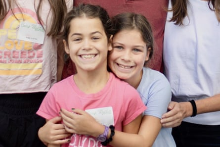

As search-and-rescue operations continue across central Texas , the death toll from the devastating and catastrophic flash flooding of the Guadalupe River continues to rise. On Sunday, Texas’s governor, Greg Abbott , said more than 40 people remain missing.
More than 100 people have now died in the floods. At least 27 of those are children. The crisis is being described as one of the US’s deadliest floods in decades and has caused between $18bn and $22bn in total damage and economic loss, according to a preliminary estimate from AccuWeather.
The hardest-hit area was Kerr county, where at least 75 of the deaths occurred.
Many of the victims have been identified by their relatives. Here is what we know so far about some of those whose lives were taken by the floods:
Campers and staff from Camp Mystic
As of Monday morning, at least 27 girls and camp counselors from Camp Mystic, a Christian all-girls summer camp along the Guadalupe River, have died, the camp confirmed in a statement .
Among the victims was eight-year-old Renee Smajstrla , whose uncle, Shawn Salta, has confirmed her death to multiple outlets . Salta wrote on Facebook that Renee was “found and while not the outcome we prayed for, the social media outreach likely assisted the first responders in helping to identify her so quickly”.
“We are thankful she was with her friends and having the time of her life,” Salta wrote.
Hanna Lawrence and Rebecca Lawrence.Photograph: John Lawrence/AP
Twin sisters Hanna and Rebecca Lawrence , eight, were also among those lost, according to their grandfather, David Lawrence Jr, the former publisher of the Miami Herald .
“It has been an unimaginable time for all of us,” Lawrence Jr told the Herald.
Best friends and cabin mates Eloise Peck , eight, and Lila Bonner , nine, both from Dallas, also died in the flood, according to members of their families who spoke with Fox 4 News and other outlets.
“Eloise was literally friends with everyone,” her mother told FOX 4 . “She loved spaghetti but not more than she loved dogs and animals.”
Nine-year-old Janie Hunt of Dallas, also died in the flash flooding, her mother told CNN and her grandmother told the New York Times .
A great-granddaughter of the oil baron William Herbert Hunt, Janie was remembered on Instagram by her relative, Tavia Hunt, the wife of Kansas City Chiefs owner Clark Hunt. “How do we trust a God who is supposed to be good, all knowing and all powerful, but who allows such terrible things to happen – even to children?” she wrote.
The family of another camper, eight-year-old Sarah Marsh , confirmed to multiple outlets that the girl died in the flooding .
The mayor of Mountain Brook, Alabama, said in a statement that “Sarah’s passing is a sorrow shared by all of us, and our hearts are with those who knew her and loved her”. Alabama senator Katie Britt said that she was “heartbroken” over the loss of Sarah.
The family of -year-old Anna Margaret Bellows also confirmed to Fox News that their daughter was among those killed. According to the local NBC affiliate , Bellows shared a cabin with two other missing campers.
Camp Mystic’s co-owner and director, Richard “Dick” Eastland is also among those who have died, according to the the New York Times and other outlets.
Eastland, who had run Camp Mystic alongside his wife, Tweety, for more than 50 years, died while being transported to a Houston hospital, the BBC reported. He and his wife were the third generation of their family to operate the all-girls Christian summer camp. Many of their 11 grandchildren are involved in camp operations today.
Eastland died while trying to save campers during the flooding, his grandson George wrote on Instagram .
Chloe Childress.Photograph: Debbie Psifidis/AP
Camp counselor Chloe Childress was also killed during the devastating flooding, her family told ABC News.
Childress “lived a beautiful life that saturated those around her with contagious joy, unending grace, and abiding faith”, her family said.
As of Monday, one counselor and 10 young girls remain missing.
Jane Ragsdale
Jane Ragsdale, 68, the co-owner and director of another all-girls camp along the Guadalupe River, Heart O’ the Hills, was among those killed in the devastating flood, the camp confirmed .
In a statement, the camp described Ragsdale as someone who “embodied the spirit of Heart O’ the Hills”.
The camp was between sessions at the time of the flooding, and no campers were on-site, the camp said.
Julian Ryan
Julian Ryan, 27, died while helping his family escape rising floodwaters in Ingram, Texas, his fiancee, Christinia Wilson, told CBS affiliate KHOU and the New York Times .
As water surged into their home early Friday, Wilson said that Ryan placed their 13-month-old and six-year-old children on floating mattresses, and punched through a window to get his family out.
Wilson said that Ryan was badly injured in the process and that despite multiple 911 calls, help didn’t arrive in time.
“He died a hero, and that will never go unnoticed,” Ryan’s sister, Connie Salas, told KHOU.
Jeff Wilson
Jeff Wilson, a longtime teacher in suburban Houston, was also killed in the Kerrville flood, according to the Humble independent school district , which called him a “beloved teacher and co-worker” who worked in the school district for more than 30 years .
His wife and 12-year-old son remain missing, according to the post by the school district.
The family had been camping in the area ahead of the Kerrville Open Pro Rodeo, the New York Times reported. Wilson’s son, Shiloh, had been planning to compete in the event. Both father and son were the proud descendants of Stanley Wilson, a member of the Texas Rodeo Hall of Fame.
Blair and Brooke Harber
Sisters Blair and Brooke Harber, 13 and 11, died after their cabin along the Guadalupe River was swept away, according to their pastor, the Joshua J Whitfield, who spoke with the New York Times and NBC News , and their school, St Rita Catholic Community in Dallas.
In a statement, the school said that the girls had been staying with their grandparents, who remain missing.
“[Blair] was a gifted student and had a generous kind heart,” the girls’ father, RJ Harber, told CNN . “[Brooke] was like a light in any room, people gravitated to her and she made them laugh and enjoy the moment.”
Reece and Paula Zunker
Reece Zunker, a teacher and soccer coach at Tivy high school, and his wife, Paula, a former teacher, were killed in the flooding, according to the Kerrville independent school district .
Their children, Lyle and Holland, remain missing as of Sunday.
Sally Sample Graves
Grandmother Sally Sample Graves was another victim of the flash flooding, according to her relative Sarah Sample, who posted a statement on Facebook .
“A powerful 30ft wave destroyed her home, sweeping her and our dad downstream,” Sample wrote. “Though our dad and his dog miraculously survived, we’re still reeling.”
Tanya Burwick
Tanya Burwick.Photograph: AP
Tanya Burwick, 62, was swept away by the floodwaters while driving to her job at Walmart in San Angelo on Friday morning, her family has confirmed.
Burwick’s employer filed a missing persons report when she did not show up to work and police recovered her SUV from the water later the same day. Burwick was later discovered downstream on Saturday.
“She lit up the room and had a laugh that made other people laugh,” her daughter, Lindsey, told the Associated Press .
Dr Katheryn Eads
Dr Katheryn Eads, a psychology professor at the University of Texas , San Antonio, was also killed in the flooding.
Her daughter told ABC News said that Eads and her husband were camping in an RV when they got separated in the floodwater.
Her family described her as having “lived a fulfilling life, cut far too short”.
They said that she was “an incredible wife, daughter, mother, grandmother and person who spent her life helping kids, from those in the foster care system early in her career to those in school, both in early education as a psychologist and in college as a professor”.